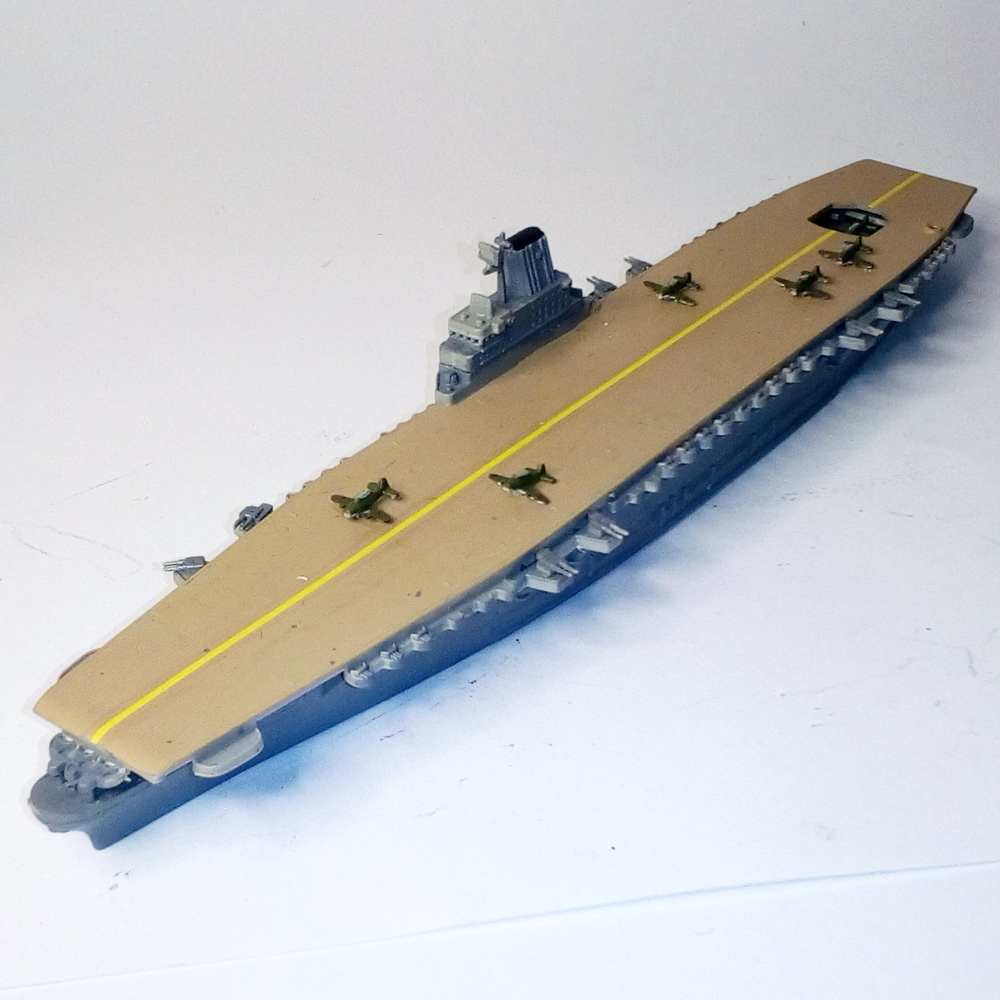
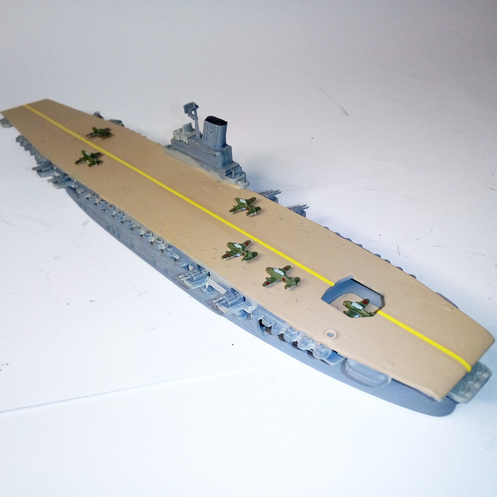

Navi · scale model archive
Aircraft Carrier Shinano
Aircraft Carrier Shinano — Kit: Revell, Scale: 1/1200. Huge aircraft carrier based on Yamato-class ship. She was sunk en route, 10 days after…

Photo gallery

English description
Huge aircraft carrier based on Yamato-class ship. She was sunk en route, 10 days after commissioning, on 29 November 1944, by four torpedoes from the U.S. Navy submarine Archerfish.
#1/1200 #Revell #Shinano
Descrizione italiana
Enorme portaerei basata su uno scafo classe Yamato. Fu affondata durante il trasferimento, dieci giorni dopo l’entrata in servizio, il 29 novembre 1944, da quattro siluri del sommergibile statunitense Archerfish.